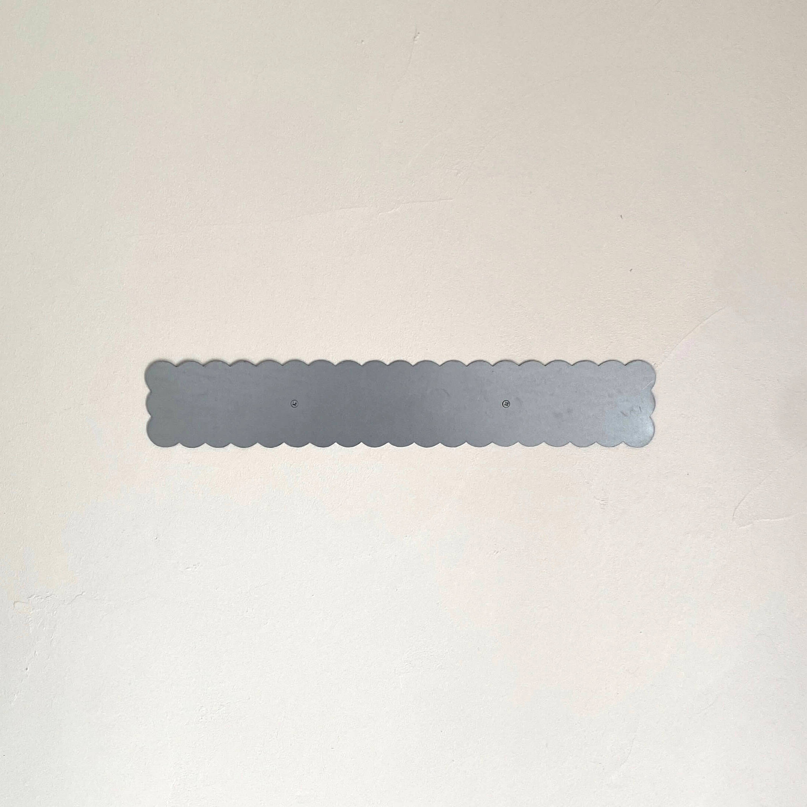
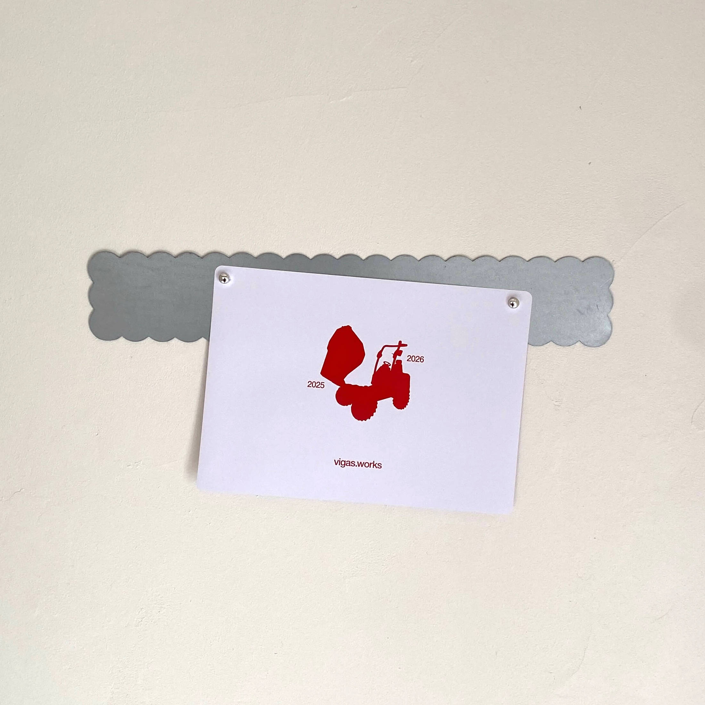
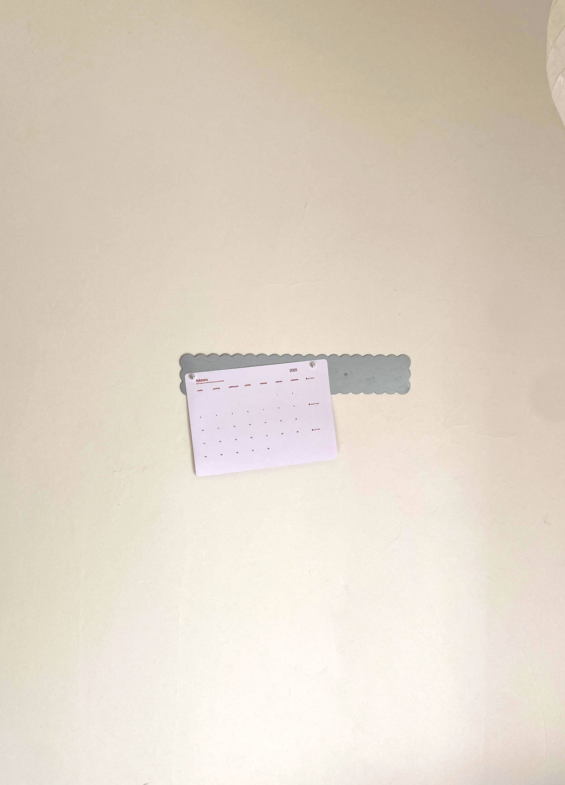
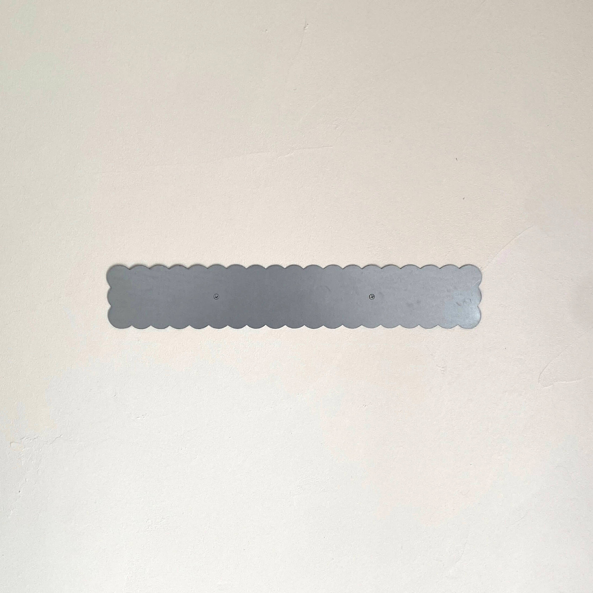
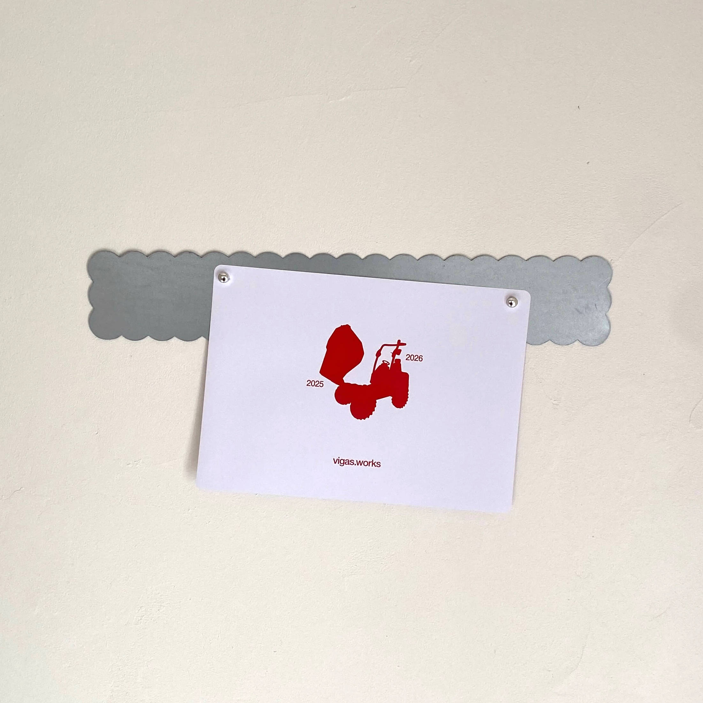
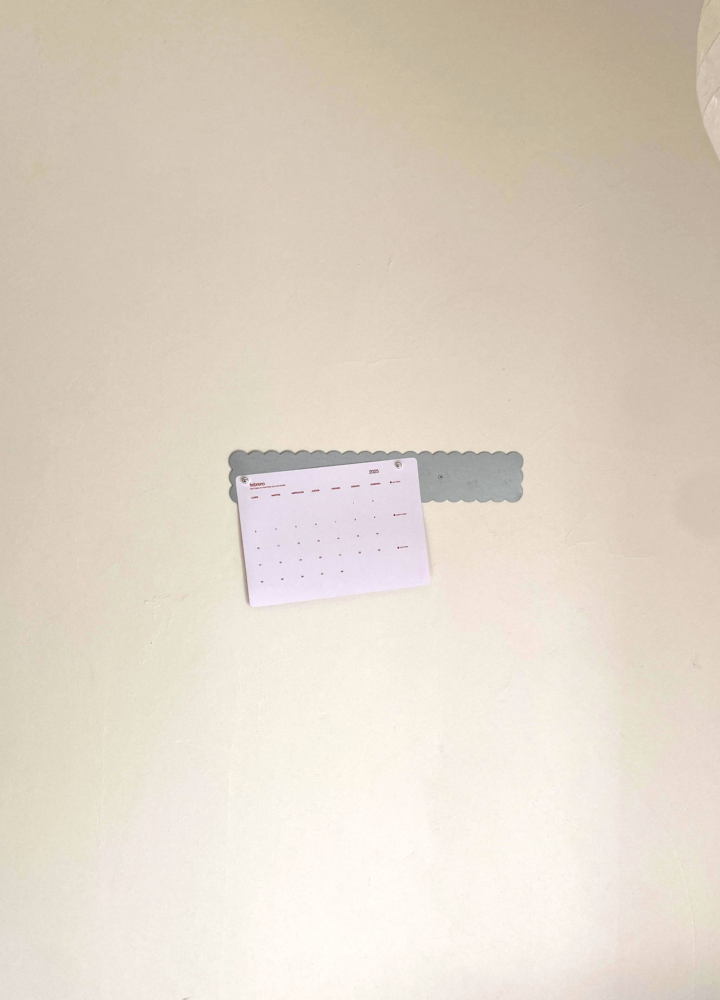

Barra
Organización, huh?
"No laser cut". "No waterjet cut". "Cortado a mano".
Incluye 6 imanes. Si no se te ocurre para qué podrías usar la barra te inspiro: notas (¿del rollo?), postales, to do lists, to don't lists, recuerdos, calendario vigas.works 2025, imágenes moodboard, vision board, listas de la compra, recetas, ideas, dibujos, para pegar cualquier imán con una funcionalidad específica (por ejemplo imanes gancho)...
Consulta aquí la información sobre el envío.
Acero galvanizado de 1 mm de espesor
40 semicírculos hechos a mano
L x W: 49 x 8 cm
*Puedo hacerlo más corto o largo bajo demanda, esto afecta al precio. Si es algo que te interesa, escríbeme antes de realizar el pedido.
**El acero de este objeto es reutilizado, por lo que la apariencia superficial de tu barra puede ser diferente a la de las imágenes. También puede presentar alguna imperfección superficial, aunque siempre intento elegir las piezas en mejor estado.
1 unidad en stock
45€
 




